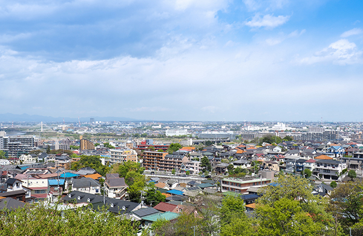

- ホーム
- 高く売りたい方【仲介売却】
Steps物件を高く売りたいなら仲介売却
仲介売却とは
仲介売却とは、不動産会社に仲介してもらって不動産を売却することを指します。不動産会社に販売活動から契約に関する手続きまでを行ってもらう、不動産売却の一般的な方法です。
不動産会社に査定をしてもらうものの、もっと高値で売りたい場合には、希望の金額での販売活動をしてもらうことも可能です。自分の納得のいく価格で不動産を売却できる方法です。
仲介売却のメリット
仲介売却のメリットは、不動産買取と比べて高い金額で売却できること。不動産売却の場合は買取後にリフォームするため、市場での売却価格より買取金額は下がってしまいます。
その点、仲介売却であれば一般の方相手に売却するので、不動産会社に仲介手数料を払う必要はありますが、手数料を差し引いても手元に残るお金は多くなるでしょう。
仲介売却の流れ
STEP1 不動産会社に相談・査定依頼
仲介売却を考えたら、まずは一度不動産会社に相談してみましょう。査定は無料で、お持ちの不動産の資産価値を知ることができます。また、査定に来てもらった時に仲介売却について不安なことを、担当の方に質問してみるのもいいでしょう。
STEP2 媒介契約を締結
査定後に査定価格や、どのように不動産を販売するのか説明してもらい、その内容に納得できたら媒介契約を締結します。媒介契約には「専属専任媒介契約」「専任媒介契約」「一般媒介契約」の3種類があり、それぞれメリット・デメリットがあるため、自分たちにあった媒介契約を結びましょう。
STEP3 売却活動
契約を結んだらいよいよ販売活動のスタートです。基本的に販売活動は不動産会社に任せますが、内見の希望者がいたら対応する必要もでてきます。内見の印象は購買判断に大きな影響を与えるので、印象のいい部屋にしておきましょう。
STEP4 申し込み・売買契約の締結
購入希望者が見つかったら、価格や引き渡しの条件を調整していきます。難しい単語も出てきますが、不動産会社が間に入ってくれるので、不安なことは都度相談しましょう。売り主、買い主ともに合意に至ったら、売買契約の締結を行います。
STEP5 手続き〜残代金の受け取り・引っ越し

売買契約を結んだら、不動産を引き渡すために引っ越しを行います。残りの代金を受け取るのと同時にカギを引き渡せば、無事売却の手続きの完了となります。
媒介契約の種類
不動産会社に売却を依頼する際に「媒介契約」を結びます。「媒介契約」には「専属専任媒介契約」「専任媒介契約」「一般媒介契約」の3種類があり、それぞれメリット・デメリットがあるため自分にあった契約方法を選びましょう。
専属専任媒介契約
専属専任媒介契約は1社の不動産会社に不動産販売を依頼し、自分で買い主を探すことができない契約です。有効期限は最大3ヶ月で、不動産会社は媒介契約成立5日以内にREINSに物件を登録することを義務付けられています。さらに週に1度、販売業務の状況を報告しなければならないなど、不動産会社に結果を求めることができます。期限が決まっているため、期限内に買い手が見つかりやすいことがメリットです。しかし、1社にしか依頼できないため、信頼できる不動産会社を探して依頼しなければなりません。
専任媒介契約
専任媒介契約も1社の不動産会社に絞って売却活動を依頼しますが、専属専任媒介契約と異なるのは、自分で買い手を見つけてきても大丈夫な点です。その場合は不動産会社を介して契約する必要はありません。契約の有効期限は最大3ヶ月で、不動産会社は媒介契約成立7日以内にREINSに物件を登録することを義務付けられており、販売業務の状況は2週に1度以上の頻度で報告する必要があります。自分でも買い手の目処は立っているが、もっと好条件で買ってくれる買い手を探したい時に利用するのがいいでしょう。
一般媒介契約
一般媒介契約は複数の不動産会社に販売を依頼し、自分でも買い手を探せる契約です。一見、様々な不動産会社に依頼できて有利に見えますが、先の2つと違い、REINS（レインズ）への登録義務も販売状況の報告の義務もありません。さまざまな不動産会社に依頼するため、販売活動の幅は広くなりますが、案外買い手探しに時間がかかってしまうことも珍しくありません。
媒介契約は一概にどの契約がいいとは言えません。信頼できる不動産会社を知っているか、自分でも買い手の目処が立っているかなど、その時の条件でベストな選択肢は変わります。自分の状況にあった契約を選びましょう。もし、信頼できる不動産がないができるだけ物件を高く売りたい場合は、十人十色ライフサービスまでご相談ください。気仙沼市の不動産事情を知り尽くした十人十色ライフサービスでしたら、お客様の仲介売却を全力でサポートいたします。